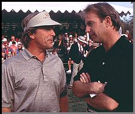

Contents | Features | Reviews | Books | Archives | Store |
 |
|
| Movie Credits | Buy It! |
Tin Cup
Review by Carrie Gorringe
|  | Directed by Ron Shelton. Starring Kevin Costner, Screenplay by John Norville and Ron Shelton. |
Roy "Tin Cup" McEvoy (Costner), a one-time promising golf pro, has been reduced to tending a run-down driving range out in Texas with his faithful caddy (Marin) in tow. His life changes when the beautiful psychologist Molly Griswold (Russo) shows up for lessons. McEvoy is less pleased to discover that Dr. Griswold’s significant other is none other than David Simms (Johnson), an airbag masquerading as a successful Pro-Am tour golfer and McEvoy’s old college rival. Having been jealous of McEvoy’s superior talents on the green for years, Simms takes advantage of McEvoy’s financially-straitened circumstances to humiliate him in public. In turn, and now equally jealous, McEvoy decides to train for the U.S. Open tournament (the only pro tournament in the United States, we are told, for which no prior tournament wins are necessary to qualify) to subject Simms to a little humiliation of his own.
But McEvoy didn’t reduce himself to groundskeeper through bad luck alone; the old demons that brought him down have come back to impede his game. He enlists Griswold’s help in getting there in one piece. And he does, going from laughing stock of the tourney to serious contender. But there is one final demon that has to be harnessed, and it may be enough to undermine all of McEvoy’s efforts.
The above summary doesn’t really do any justice to the nuances in Tin Cup. Screenwriters Norville and Shelton (the former an erstwhile pro golfer) masterfully delineate how the brutal distinction between past glories and present misfortune play themselves out at both the professional and real-life levels. Despite the fact that even Simms must grudgingly give McEvoy his due as to his prowess on the golf course, there is no room for someone with preternatural skill who is not willing to put it to the test whenever necessary. McEvoy also has to come to terms with his own responsibility for his own restricted circumstances, while at the same time coping with the fierce competition in a world where success and fame does not come to the second-best. The film’s ending is marred by more than a little improbableness -- without giving too much away, it’s rather difficult to say to what extent someone can control the circumstances surrounding his or her sudden celebrity without irreparable consequences to that celebrity -- but the question it raises may be far more interesting than any intended emotive effect.
And then there’s the love story. Far from being merely a plaid-pants extravaganza (though there’s enough shots of immaculately-groomed greens to set even the most seasoned golfer to drooling in ecstasy), the film also gives Costner and Russo sly one-liners to hurl at each other. The overall impression is similar to that obtained from the best of 1930s screwball comedies, when writers with names like Rifkin, Sturges and MacArthur poured out dialogue with innuendoes that were saucy but never vulgar. Like its predecessors, Tin Cup follows in that same vein of intelligent dialogue for adults. Predictably, the first meeting of McEvoy and Griswold is not, in Hollywood parlance, a "meet-cute"; there’s nothing cute about it, as they fight their instant and mutual attraction, while secretly proving their worthiness to, each other, becoming better people in the process. Never before have golf’s more seductive undercurrents ever been made more obvious, or, for some of us, even obvious.
On top of these entertainments, Shelton, keeping with the tenor of his other work, has surrounded himself with actors who are very much in concert with the film’s shaggy-dog sensibilities. It’s been a long time since I could understand what all of the fuss was about concerning Costner’s work. Ever since the critical and commercial success of Dances With Wolves, Costner has been steadily transforming himself into the male equivalent of Demi Moore. There’s been no liberal use of body paint, but Costner had begun the slippery descent into that rigid humorlessness that many stars seem to equate with being "serious" actors. Appalling excesses like the waterlogged Waterworld were painfully apparent confirmations that Costner’s career was heading for a long sojourn in a sandtrap.
Fortunately, his performance in Tin Cup is one of those rare retrograde movements that can exhume much of the long-forgotten justification for an actor’s career, and move it forward, rather than being a faint memory of past glories. Not since Bull Durham (another Shelton film, and the one that confirmed his then-new star status), has Costner been able to exude a persona that is, at various and aptly-timed turns, sexy, vulnerable and funny. Costner’s love scenes with Russo have that rare ability to generate on-screen heat; these are people who like each other but fight the attraction. They make a nice change from the majority of on-screen characters this year who look to exploit, abuse, and/or murder each other. As is typical, Marin delivers high-quality work as one of the necessary elements in McEvoy’s life. Johnson is fine as the rival with a nasty streak just barely concealed by the glitter from his stainless-steel exterior. Tin Cup is, in cinematic terms, a nice, clean shot down the fairway; there are moments when the various games flag a little too much, making Tin Cup seem more like a birdie than a hole-in-one, but the power of a good birdie should never be discounted. Under certain circumstances, it can save a game, just like a good film can save a flagging career.
Contents | Features | Reviews | Books | Archives | Store
Copyright © 1999 by Nitrate Productions, Inc. All Rights Reserved.